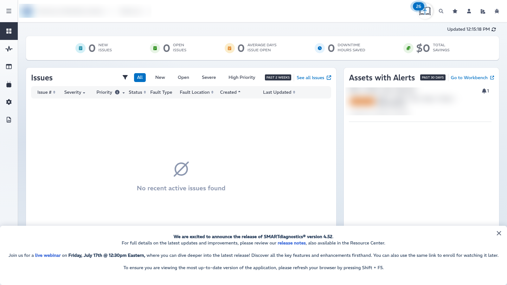
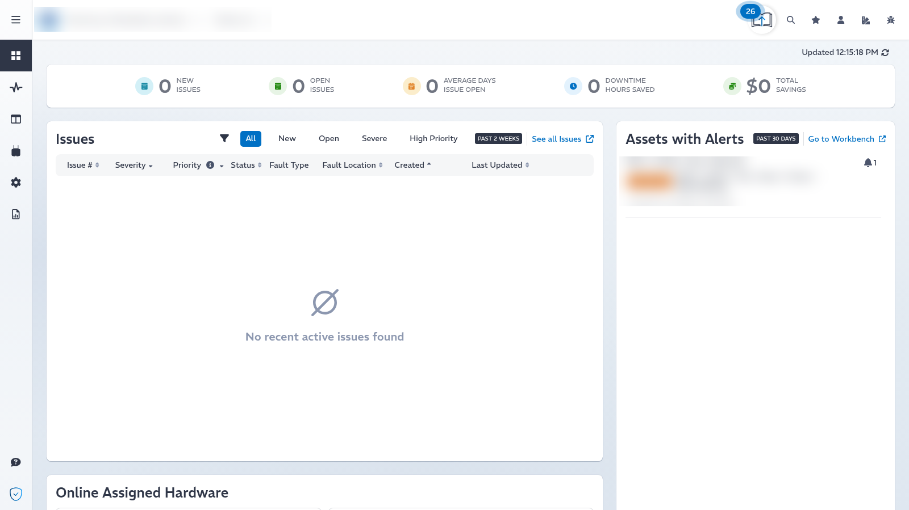
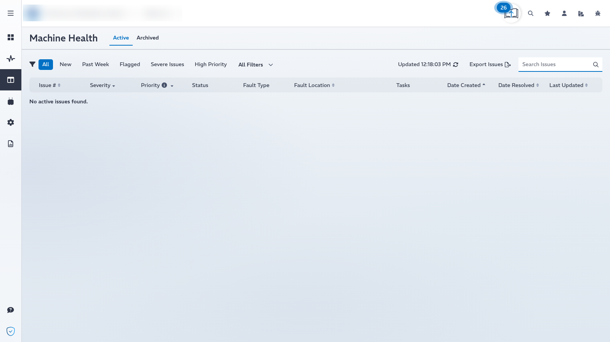
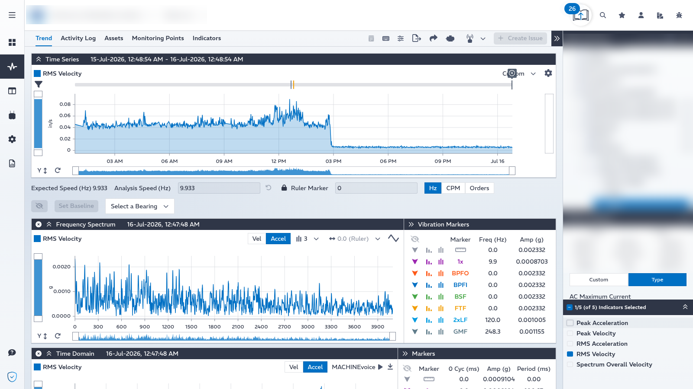
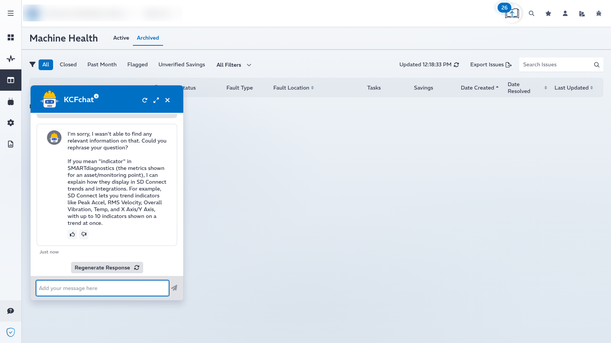
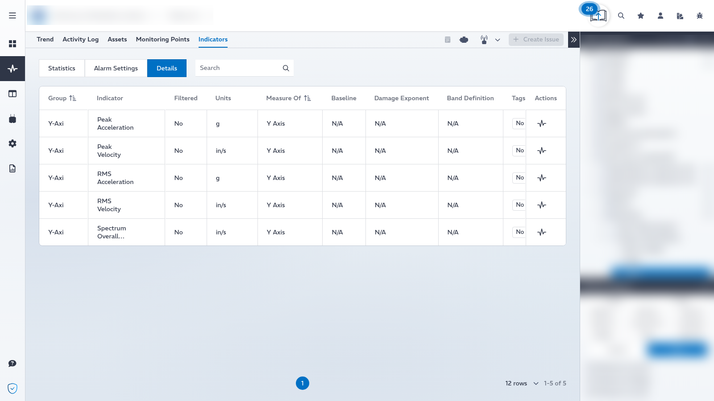
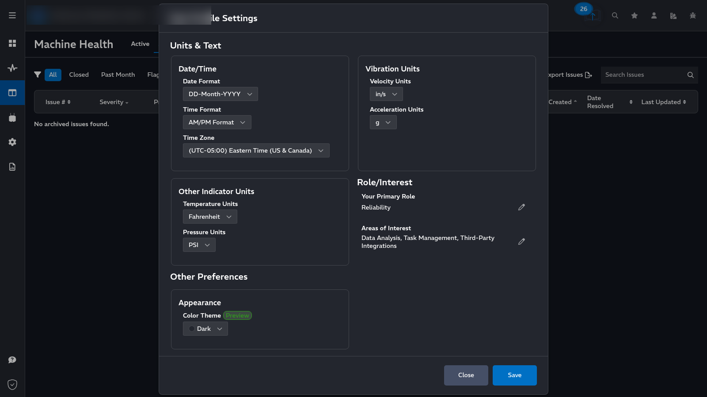
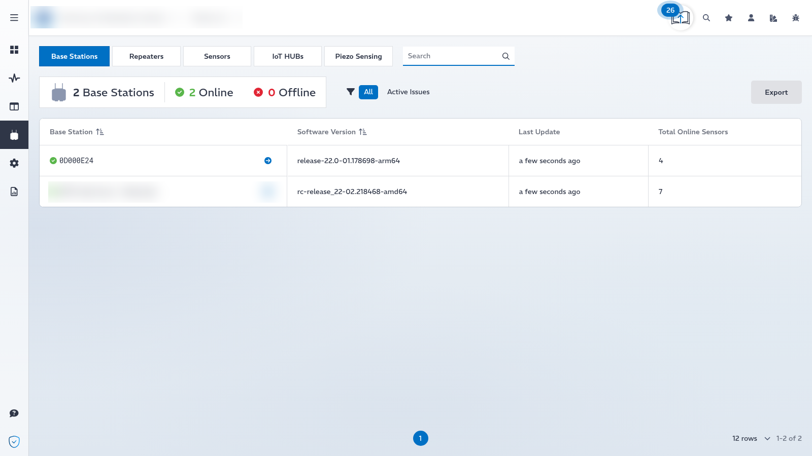
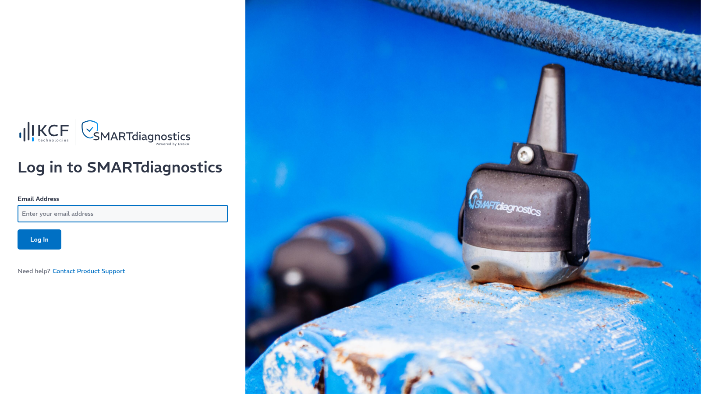

A field study of a mature industrial condition-monitoring SaaS — what it does well, how it is built, and which ideas are worth borrowing. Observed hands-on from a live production tenant, running release 4.52.3.
SMARTdiagnostics is KCF Technologies' predictive-maintenance platform. Battery-powered wireless sensors stream vibration, temperature, pressure and oil-quality data through base stations to a cloud backend; a browser app turns that telemetry into machine-health issues, guided diagnostics, and quantified downtime savings.
The product is deliberately organized around three jobs — get the right data, do the right analysis, and take the right action. That framing shows up everywhere in the UI: a guided path that runs from a location Overview, into a deep vibration Workbench, into a Machine-Health Desk where issues become work, and out to Reports. It is a focused, opinionated tool rather than a generic dashboard builder, and that focus is its biggest strength.
Underneath, it is a modern single-page React application backed by a .NET (ASP.NET Core) API, hosted entirely on AWS. What makes it interesting as a benchmark is not any single feature but the engineering maturity: a clean design-token theming system, per-user preferences with on-the-fly unit conversion, a flexible typed asset tree, a strict Content-Security-Policy, and a feature-flag-driven migration from a .NET monolith toward AWS serverless that is visibly in progress.
The just-shipped 4.52 release introduces SD Pulse (beta), an AI assistant built directly into the Machine-Health Desk that investigates issues, surfaces likely root causes, and recommends next steps by combining asset details, indicator trends, issue history and maintenance records. The same release folds Critical Alarms into the Draft-Issue workflow and adds Sensor Ship Date for hardware lifecycle tracking. This is a clear signal of where the product is heading: from surfacing data to recommending decisions.

Where the product genuinely shines. Each strength below is paired with evidence captured from the running application.
The left navigation reads like a maintenance playbook: Overview (Summary, Dashboards, Maps) → Workbench → Desk (Machine Health, Hardware Health) → Hardware → Settings → Reports. The location Summary leads with the outcomes that matter to a plant — open issues, average days-to-close, downtime hours saved, and total dollar savings — and only then drops into detail. The tool is opinionated about the path a reliability engineer should take, which lowers the learning curve dramatically.


This is the technical heart of the product and the hardest part to build well. The Workbench Trend view stacks three synchronized charts — a long-range Time Series, a Frequency Spectrum (FFT), and a Time Domain waveform — over the same asset and time window. A vibration-markers panel overlays the classic bearing-fault frequencies (BPFO, BPFI, BSF, FTF), gear-mesh (GMF) and line-frequency (2×LF) markers with live amplitude readouts, and the analyst can switch units between Hz, CPM and Orders. This is professional-grade diagnostic tooling rendered entirely in the browser as SVG (Recharts/D3), with heavy signal math offloaded to a small WebAssembly module.

KCF's AI shows up in three distinct layers, which is smart product design. MachineIQ is the ML layer that produces "Smart Indicators" — a 0–1 probability that a specific failure mode is developing, surfaced on the asset card and as its own color on the activity timeline. KCFchat is a RAG help assistant grounded in product documentation; it is honest about scope, explicitly stating it cannot read live tenant data. And as of 4.52, SD Pulse pushes AI into the actual diagnostic loop inside the Desk. Three assistants, three clearly separated jobs — documentation help, statistical prediction, and guided root-cause reasoning.
api.sd.kcftech.com/v4/helpbot), stateless, with thumbs-up/down feedback and an explicit "what I cannot see" disclaimer.
Assets are organized as a typed, nestable tree rather than fixed levels. A node's role is defined by its TreeItemType — System → Group → Assembly → Asset → MonitoringPoint → IndicatorGroup → Indicator — not by its depth, so one customer can model a plant as deeply or as flatly as reality demands without schema changes. On top of that sits an authoritative catalog of 48 indicator types across 10 categories (acceleration, velocity, pressure, analog current/voltage, oil quality, and more), each with its own units and analytics. Small touches — a per-node Abbreviation for compact breadcrumbs, IsPaused to mute a subtree during maintenance, manual SortOrder to match physical layout — show a model designed by people who understand the domain.

The details are finished. Four color themes — Light, Dark, Navy and Night — are driven by CSS design tokens and a single data-theme attribute, with a live "Preview" before saving. Per-user preferences cover units (°C/°F, in/s ↔ mm/s, g ↔ mm/s², PSI/Pa/mbar), date/time format, time zone, role and interests, with conversion applied in the UI over canonical stored values. Around the core product sits a real ecosystem: a corporate Deployment & Value dashboard, embedded Power BI support, hardware fleet management (base stations, sensors, repeaters, IoT hubs, piezo), scheduled and instant reports, a Maps view, and an Academy LMS for training.
One semantic token set, re-skinned per theme via data-theme; text color in dark themes derived from the background with LCH for automatic contrast.
Units, formats, time zone and theme live on the user; the backend stores canonical values and the UI converts on the fly.
A native corporate rollup of deployment scope, value by type and asset coverage — the product sells its own ROI.
Base stations, sensors, repeaters, IoT hubs and piezo nodes with firmware versions and online status.


How the platform is actually built — assembled from HTTP fingerprinting, JavaScript bundle inspection, and live network capture with a legitimate account. Nothing here required server access.
| Layer | Technology | Notes |
|---|---|---|
| Framework | React 18.3.1 (SPA, PWA) | Webpack code-split bundles, content-hashed immutable assets |
| State / routing | Redux Toolkit · React Router | Axios for HTTP |
| Styling | styled-components 6 + CSS design tokens | Theming via data-theme; base font "REM"; Font Awesome 6 Pro |
| Charts | Recharts + D3 (SVG only) | No Canvas; heavy signal math in a ~20 KB WebAssembly module |
| Build tag | 4.52.3 | New version scheme (was 2.329.0_prod-io a month earlier) |
| Layer | Technology | Evidence |
|---|---|---|
| CDN / edge | AWS CloudFront | server: CloudFront, x-amz-cf-* headers |
| Static hosting | AWS S3 | x-amz-version-id, cache 15 min |
| Primary API | ASP.NET Core / Kestrel (.NET) | server: Kestrel on /api/v3.0/*; OData-style filters |
| Secondary API (v4) | AWS API Gateway → Lambda | api.sd.kcftech.com/v4/*; hosts the AI helpbot & v4 sensors |
| Identity | AWS Cognito + Amplify | Bearer tokens (~1 h), pluggable provider discovery by email → SSO-ready |
| Region | AWS us-east-1 | Cognito, Sentry ingest, CloudFront edge |
| Service | Role |
|---|---|
| Sentry (@sentry/react 10.39) | Front-end error tracking |
| ConfigCat | Feature flags — the backbone of phased release & migration |
| Pendo (white-labeled) | Product analytics, in-app guides, Resource Center (dominates initial network volume) |
| Power BI Embedded | Optional embedded BI dashboards |
| Academy LMS | User training (academy.kcftech.com) |
Browser — React 18.3.1 SPA (PWA)
Redux Toolkit · React Router · Axios · styled-components 6 · Recharts/D3
WASM (signal math) · Amplify/Cognito · Sentry · ConfigCat · Pendo · Power BI
│ static assets │ APIs (Cognito Bearer)
▼ ▼
┌──────────────────┐ ┌───────────────────────────────┐
│ CloudFront + S3 │ │ CloudFront (API proxy) │
│ (js / css / wasm)│ │ ▼ │
└──────────────────┘ │ Kestrel / ASP.NET Core │ ← API v3.0 (monolith, OData REST)
└──────────────┬─────────────────┘
┌───────────────────────────────┐ │
│ AWS API Gateway → Lambda │ ← v4 ▼
│ /v4/helpbot, /v4/*Sensors │ Time-series DB + RDBMS (inferred)
└───────────────────────────────┘ │ RF wireless
Base Stations → Repeaters → Sensors
The front end ships a mature, strict Content-Security-Policy — default-src 'none' with a per-directive allowlist and hashed inline scripts — alongside HSTS (2-year preload), X-Frame-Options: DENY, nosniff, a strict referrer policy, and disabled geolocation/camera/microphone via Permissions-Policy. Multi-tenant scope is carried in x-kcf-corp_id / x-kcf-location_id headers rather than in URLs. No OpenAPI/Swagger spec is publicly exposed. This is a security baseline most SaaS products never reach.
The ~18 ConfigCat flags read like a roadmap. A phased v3 → v4 migration is clearly underway (timeSeriesCutoverPhase1/2, a family of v4Sensors* flags for enveloped data, low-frequency collection, smart-sampling, triggered capture and Z-axis), and AI is being woven into the issue workflow (deskChatAutoreply, publishCriticalAlertsAsIssues). Rather than rewriting the .NET monolith in one shot, KCF stands new capabilities up on AWS serverless and migrates domain-by-domain behind flags — a low-risk "strangler" migration.

Reading SMARTdiagnostics as a benchmark: if we were building an industrial monitoring platform of our own, here is what we would keep, drop, and add.
SMARTdiagnostics is a strong, mature product with real engineering discipline. Its lessons are less about individual features and more about architecture and product judgment: an opinionated workflow beats a blank dashboard, a typed-flexible data model beats rigid levels, feature flags make big migrations survivable, and AI is most valuable when it is layered and scoped rather than bolted on. The recommendations below separate the patterns worth copying from the friction worth avoiding.
| Verdict | Item | Rationale |
|---|---|---|
| Keep | Design-token theming via data-theme | One semantic token set re-skinned per theme, with dark-theme text derived from the background via LCH. Clean, cheap, and gives Light/Dark/Navy/Night for almost free. |
| Keep | Typed, nestable asset tree | A generic TreeItem { type, abbreviation, isPaused, sortOrder, children } flexes to any plant topology without schema migrations. Best-in-class data modeling. |
| Keep | Per-user preferences + canonical storage | Store SI/canonical values; convert units and formats in the presentation layer. The right way to serve a global user base. |
| Keep | Feature flags as the release backbone | Phased cutovers and edge-first monolith→serverless migration behind flags is the single most reusable lesson here. |
| Keep | Strict CSP + tenant-scope headers | default-src 'none' with hashed inline scripts, and multi-tenant scope in headers not URLs. Mature and inexpensive to copy. |
| Keep | Outcome-first, guided workflow | Leading with downtime-saved and dollar-value, and guiding users Overview→Workbench→Desk→Reports, lowers the learning curve. |
| Drop | Heavy Pendo footprint on first load | Product analytics/guides dominate initial network requests. Worth adopting the capability, but lazy-load it — don't let it tax time-to-interactive. |
| Drop | Residual default Swagger UI asset | A leftover petstore Swagger page is served (harmless, but noise). Ship clean; remove default scaffolding. |
| Drop | Two overlapping help/AI entry points | KCFchat (docs) and SD Pulse (diagnostics) risk confusing users. Consolidate into one assistant that routes by intent. |
| Drop | ~1 h token with in-session expiry friction | Short Cognito tokens are fine, but silent refresh must be seamless so long analysis sessions never interrupt. |
| Add | AI with read access to live tenant data | KCFchat explicitly can't see live data. An assistant that combines RAG docs with tool-calling over the telemetry API ("which assets are in alarm and why?") would be a real differentiator — and SD Pulse is the first step toward it. |
| Add | A public, versioned OpenAPI spec | No spec is exposed. A documented API accelerates integrations and partner ecosystems. |
| Add | Real-time streaming to the client | Data is polled ("Updated 12:15 PM"). WebSocket/SSE push would make the Desk feel live — 4.52's "near real-time" note suggests they're already moving here. |
| Add | Deeper CMMS / historian round-tripping | Issues reference maintenance records; a first-class bidirectional Maximo/SAP/historian sync would close the loop from detection to work order to verified savings. |
The most transferable ideas are structural: a token-driven design system, a typed-flexible domain model, per-user canonical preferences, and a flag-gated strangler migration. The clearest opportunity the product hasn't fully seized — an AI copilot with live, tool-calling access to the customer's own data — is exactly where SD Pulse is now heading, and exactly where a new entrant could leapfrog.